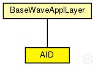

This documentation is released under the Creative Commons license
This documentation is released under the Creative Commons licenseTODO auto-generated module
The following diagram shows usage relationships between types. Unresolved types are missing from the diagram. Click here to see the full picture.
The following diagram shows inheritance relationships for this type. Unresolved types are missing from the diagram. Click here to see the full picture.
| Name | Type | Description |
|---|---|---|
| BaseWaveApplLayer | simple module |
WAVE application layer base class. |
| Name | Type | Default value | Description |
|---|---|---|---|
| debug | bool | false |
whether to print debug output |
| headerLength | int | 88bit |
header length of the application |
| sendBeacons | bool | false |
tell the applayer to periodically send beacons |
| beaconLengthBits | int | 256bit |
the length of a beacon packet |
| beaconPriority | int | 3 |
the access category of the beacon messages |
| beaconInterval | double | 1s |
the intervall between 2 beacon messages |
| maxOffset | double | 0s |
the maximum delay of messages sent down to avoid synchronous channel access |
| sendData | bool | false |
whether this applayer should send data |
| dataLengthBits | int | 1024bit |
the length of a data packet |
| dataOnSch | bool | true |
tells the applayer whether to use a service channel for datapackets or the control channel |
| dataPriority | int | 3 |
the access category for data packets |
| log_traffic | int |
logging parameters |
|
| log_replication | int | ||
| randomDelayTimeMax | double | 60ms | |
| maxGPSError | double | 0m | |
| datarate | double | 2Mbps |
| Name | Value | Description |
|---|---|---|
| class | AID |
| Name | Direction | Size | Description |
|---|---|---|---|
| lowerLayerIn | input |
from mac layer |
|
| lowerLayerOut | output |
to mac layer |
|
| lowerControlIn | input | ||
| lowerControlOut | output |
| Name | Title | Source | Record | Unit | Interpolation Mode |
|---|---|---|---|---|---|
| messagesTransmitted | sum | ||||
| messagesReceived | sum | ||||
| duplicatedMessages | sum |
// // TODO auto-generated module // simple AID extends BaseWaveApplLayer { @statistic[duplicatedMessages](record=sum); @statistic[messagesTransmitted](record=sum); @statistic[messagesReceived](record=sum); // logging parameters int log_traffic; int log_replication; double randomDelayTimeMax @unit(s) = default(60ms); double maxGPSError @unit(m) = default(0m); double datarate @unit(bps) = default(2Mbps); @class(AID); }
This documentation is released under the Creative Commons license